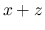
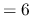
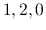
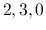
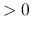
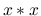
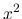

.
This document is intended for people who are interested in understanding how FORM works internally, how to find and correct bugs in the source code, and how to extend FORM by implementing new features.
It is assumed, that the source code is available, either as a package or directly via CVS access to the FORM repository. The FORM package contains many files and several subdirectories. The actual sources of FORM, TFORM, and PARFORM are all in the directory sources (see section 2 for an overview). Documentation can be found in the directory doc. The testing suite is contained in the directory check.
Here we will discuss general aspects of the source code, i.e. the files contained in the directory sources.
FORM is written in ANSI C. The code is split up in header files *.h and source files *.c. Files usually don't come in pairs of a header file with the declarations and a source file with the definitions, but instead most declarations are collected in a few headers. The declaration of function headers is done in declare.h for example. The most prominent exceptions are parallel.h and minos.h.
Each file usually contains many hundred lines of code. To make the files more accessible, the code is structure by so-called folds. If you use the editor STedi, the code will be visualized correctly. If you use a vi-compatible editor, it is advisable to activate folds and set the foldmarkers to set foldmarker=#[,#]
| declare.h | Contains the declarations of all publicly relevant functions as well as of commonly used macros like NCOPY or LOCK. |
| form3.h | Global settings and macro definitions like word size or version number. It includes several different system header files depending on the computer's architecture. |
| fsizes.h | Defines macros that determine the size and layout of FORM's internal data like the sizes of the work buffers etc. |
| ftypes.h | Contains preprocessor definitions of the codes used in the internal representation of parsed input and expressions. |
| fwin.h | Special settings for the Windows operating system. |
| inivar.h | Contains the initialization of various global data like the FORM function names or the character table for parsing. It also defines the global struct A, and for TFORM the struct pointer AB. |
| minos.h | Dedicated header to the minos.c source file. |
| parallel.h | Dedicated header to the parallel.c source file. |
| portsignals.h | Preprocessor definition of the OS signals FORM can deal with. |
| structs.h | Defines the structs that contain almost all of FORM's internal data. |
| unix.h | Special definitions for Unix-like operating systems. |
| variable.h | Some convinience preprocessor definitions to ease the access to global variables, like cbuf or AC. |
| argument.c | Code for the argument and term FORM statements. |
| bugtool.c | Low-level debugging code. |
| checkpoint.c | Code to test for checkpoint conditions, to create snapshots, and to recover from snapshot data. |
| comexpr.c | Functions the compiler calls to translate a statement that involves an algebraic expression, e.g. Local or Id. |
| compcomm.c | Functions the compiler calls to translate a statement that neither involves an algebraic expression nor is a variable declaration. |
| compiler.c | Main compiler code. |
| compress.c | Code for GZIP (de-)compression in sort files. |
| comtool.c | Utility functions for the compiler, like AddRHS. |
| dollar.c | Code dealing with dollar variables. |
| execute.c | Code for the execution phase of a module. Also, code dealing with brackets in FORM expressions. |
| extcmd.c | External command code. |
| factor.c | Simple factorizing code for dollar variables and expressions. |
| findpat.c | Pattern matching for symbols and dot products. |
| function.c | Pattern matching for functions. |
| if.c | Code for the if statement. |
| index.c | Code for bracket indexing. |
| lus.c | Code to find loops in index contractions. |
| message.c | Text output functions, like MesPrint or PrintTerm. |
| minos.c | The minos database. |
| module.c | Code for module execution and the moduleoption, exec and pipe statements. |
| mpi2.c | MPI2 code for PARFORM. |
| mpi.c | MPI1 code for PARFORM. |
| names.c | Name administration code to deal with the declaration of FORM variables. |
| normal.c | Code to normalize terms, i.e. bring them to standard form. |
| opera.c | Code for doing traces, contractions, and tensor conversions. |
| optim.c | Code to optimize FORTRAN or C output. |
| parallel.c | PARFORM (MPI-independant code). |
| pattern.c | General pattern matching and substitution. |
| poly.c | Code for polynomial arithmetic (experimental). |
| polynito.c | Code for polynomial arithmetic and manipulation. |
| pre.c | The preprocessor. |
| proces.c | The central processor. |
| ratio.c | Partial fractioning and summing functions. |
| reken.c | Code for numerics. |
| reshuf.c | Utility functions for the renumbering of dummy indices, and for statements like shuffle, stuffle, multiply. |
| sch.c | Code for the textual output of terms and expressions. |
| setfile.c | Code to deal with setup parameters and setup files. |
| smart.c | Code doing optimized pattern matching. |
| sort.c | Code for the sorting of expressions. |
| startup.c | Start of program (main()). Code for the startup and shutdown phase of FORM. |
| store.c | Code to read from disk or write to disk terms and expressions. Also, store file and save file management. |
| symmetr.c | Pattern matching for functions with symmetric properties. |
| tables.c | Code for the tablebases. |
| threads.c | TFORM. Almost all of the TFORM specific code. |
| token.c | The tokenizer. |
| tools.c | Utility functions to deal with streams, files, strings, memory management, and timers. |
| unixfile.c | Wrapper functions for UNIX file I/O functions. |
| wildcard.c | Code for wildcards. |
FORM keeps its data organized in several global structs. These structs are defined in structs.h (in the fold A) and come by the names M_const, P_const, .... The various global variables are grouped in these structs according to their rôle in the program. The fold commentaries give details on this. M_const is for global settings at startup and .clear, for example.
The various structs are collected in the struct AllGlobals. In the case of sequential FORM, this struct is made into the type ALLGLOBALS, and in inivar.h, the global variable A is defined having this type. This global variable A holds all the data defined in the various structs. In variable.h several macros are defined to simplify (and more importantly unify) the access to the struct elements. For example, one can access the variable S0 in T_const as AT.S0.
With the multi-threaded version TFORM things are a little bit more complicated, because some data needs to be replicated and made private for each thread. This kind of data is situated in the structs N_const, R_const, and T_const. For TFORM, these structs are collected in the struct AllPrivates (which makes up the type ALLPRIVATES), all other structs go into the AllGlobals struct. The global variable A now contains only the non-thread specific data. For each thread a AllPrivates struct is dynamically allocated and the global pointer variable (in inivar.h) AB holds their references. AB is an array of pointers where the index corresponds to the thread number. The macros defined in variable.h to access the global struct data are made such that they transparently work with the AB array. The user doesn't need to care about these details and can still write as in the previous example AT.S0. This keeps the code of sequential FORM and multi-threaded TFORM uniform.
The only small price one has to pay to make this uniform access by macros possible is to make sure every function in FORM knows in which thread it is executed. The AN, AR, and AT macros use a variable B, which is set to the correct entry in AB by one of two ways. First, a function can use the macro GETIDENTITY (defined in declare.h). In TFORM it calls WhoAmI() to get the thread number, declares the pointer B, and sets B to point to the correct entry in AB. In sequential FORM this macro is empty. The second way is to get the variable B as a parameter from the caller. For this method the macros PHEAD, PHEAD0, BHEAD, and BHEAD0 exist (defined in ftypes.h), which can be used in the parameter list of the function declarations. The variants with a zero differ only by not including a trailing comma, which is not allowed if no other parameters are following in the declaration. Usually, PHEAD is used in the declaration (it includes type information), while BHEAD appears in the calling of functions. Which way to set B is chosen, depends on the use of the function. The PHEAD method is faster than GETIDENTITY and should be preferred in functions that are called very often. On the other hand, GETIDENTITY is more general as it does not rely on every caller to supply B.
The elements of the structs are of various types. Some types are just simple macros mapping directly to built-in types (see form3.h) like WORD, others are names for structs that are defined (mostly) in structs.h. Often, variables of the same type are grouped together to help the compiler with alignment. Also, a lot of structs use macros like PADLONG (unix.h or fwin.h) to pad a struct such that its size is a multiple of a built-in type size. This again is to help with the data alignment.
Most struct elements have comments that explain their use. These commentaries often include the information where this element was once located in the old version 2 of FORM (it is the pair of parentheses with or without a capital letter inside). Pointers come in two flavors: Some pointers reference a dynamically allocated piece of memory, basically owning this memory. Others just reference another variable or point into allocated memory. The first kind is usually marked with [D] for easy identification. These pointers often need to be treated particularly, e.g. during the snapshot creation, when recovering, or when shutting down.
During start up (main()), all the memory of these global structs, i.e. their element variables, is initialized to zero.
The source code evaluates several preprocessor definitions that can be defined by the user. According to these definitions the executable can be configured in different ways. As a default, the sequential version of FORM is generated. But if, for example, the preprocessor variable WITHPTHREADS is defined, the multi-threaded version TFORM will be compiled. These preprocessor variables can be set when calling the compiler, like
gcc -c -DWITHPTHREADS -o pre.o pre.c
The most commonly considered preprocessor variables are:
WITHPTHREADS, PARALLEL,
WITHZLIB, WITHGMP, WITHSORTBOTS, LINUX,
OPTERON, DEBUGGING. The first two
change the flavor of the executable: TFORM or PARFORM. The next two configure whether FORM uses
the zlib library for compression during sorts or the GMP library for arbitrary precision arithmetics.
The next decides whether FORM uses dedicated sorting threads in TFORM. LINUX
specifies that the executable is to be compiled for a Linux or UNIX compliant operating system. An
alternative here would be to set the variable ALPHA or MYWIN64 instead, but these builds are
less common. OPTERON has to be set if one compiles a 64bit executable. DEBUGGING enables
some features for a non-release debugging version of the executable (commonly named vorm or
tvorm).
When using the autoconf setup, the settings concerning the operating system, architecture (32/64bit), and flavor of the executable are automatically done right. Additional settings like WITHZLIB can be changed by manually editing the file config.h, which is included in form3.h.
Version numbers and production date can also be set, but then one either needs to edit the appropriate lines in form3.h when in a manual compiling setup, or by editing configure.ac in an autoconf setup.
We discuss in the following what is happening inside FORM when it executes a given program. The discussion focuses more on the interplay between the various parts of FORM and on key concepts of the internal data representation than on in-depth details of the code. For the latter, the reader is referred to section 4. This section should for better comprehension be read with the referenced FORM source files opened aside.
We consider the following exemplary FORM program test.frm (which we run with the command "form test"):
1 #define N "3" 2 3 Symbol x, y, z; 4 5 L f = (x+y)^2 - (x+z)^`N'; 6 L g = f - x; 7 8 Brackets x; 9 Print; 10 .sort 11 12 #do i=2,3 13 Id x?^`i' = x; 14 #enddo 15 16 Print +s; 17 .end
The entry function main() is in startup.c. It does various initializations before it calls the preprocessor PreProcessor(), which actually deals with the FORM program. The code shows some typical features: Preprocessor macros are frequently used to select code specific to certain configurations. The two most common macros can be seen here: WITHPTHREADS for a TFORM executable and PARALLEL for a PARFORM executable. Macros are used to access the global data contained in the variable A, like AX.timeout for example. The code uses (usually) own functions instead of standard functions provided by the C library for common tasks. Examples in main() are strDup1 or MesPrint (replacing printf()). Another very often used function is Malloc1() replacing malloc(). The reasons are better portability and the inclusion of special features. Malloc1() for example makes a custom memory debugger available while MesPrint() knows among other things how to print encoded expressions from the internal buffers.
The initializations in main() are done in several steps. Some like the initialization of A with zeros is done directly, most others are done by calls to dedicated functions. The initializations are split up according to the type of objects involved and the available information at this point. The command line parameters passed to FORM (none in our example run) are treated in the function DoTail(). After that, files are opened and also parsed for addtional settings. Then, as all settings are known, the large part of the internal data is allocated and initialized. Finally, recovery settings are checked, threads are started if necessary, timers are started, and variable initializations that might need to be repeated later (e.g. clear modules) are done in IniVars().
The call to OpenInput() reads the actual FORM program into memory. The input is handled in an abstract fashion as character streams. The stream implementation (tools.c) offers several functions to open, close, and read from a stream. Streams can be of different types including files, in-memory data like parts of other streams or dollar variables, as well as external channels. The access to the characters in all streams though is nicely uniform. In OpenInput() a stream is representing our input file. Most of the logic there deals with the jump to the requested module (skipping clear instructions). It uses the function GetInput() to get the next character in the stream. Which stream it reads from is determined by the variable AC.CurrentStream. This global variable in the sub-struct C_const of the ALLGLOBALS variable A is an example of how the different parts of FORM typically communicate with each other by means of global variables.
Next is the preprocessor. The preprocessor is implemented in the function PreProcessor() in pre.c. This function consists basically of two nested for-loops without conditions (for (;;) { ...}). The outer loop deals with one FORM module for each iteration, the inner loop deals with one input line. We have certain initializations done before in our example the code runs into the inner loop, where GetInput() reads our input file. The variables are all set such that the reading starts from the beginning of out input file.
The input in variable c is tested for special cases. Whitespaces are skipped. Comments starting with a star * (unless AP.ComChar is set to a different character) are also skipped including whole folds. The crucial check on c is the if-clause that checks it for being a preprocessor command (#), a module statement (.), or something else which is usually an ordinary statement.
1 #define N "3"
In our case, we have a preprocessor command in the input. The function PreProInstruction() is called to read and interpret the rest of the line. The first part deals with the loading of the command in a dedicated buffer. For the moment, we ignore the details for the special treatment of cases when we are already inside a if or switch clause in a FORM program. In our run, the function LoadInstruction(0) is simply called.
LoadInstruction() copies input into the preprocessor instruction buffer. Three variables govern this buffer: AP.preStart points to the start of the buffer, AP.preFill to the point where new input can be copied to, and AP.preStop to (roughly) the end of the buffer. This setup is quite typical for buffers in FORM. The memory is allocated at the start of FORM. Later, like at the end of LoadInstruction(), if the buffer gets to small, it can be replaced by a larger memory patch with the help of utility functions like DoubleLList(). The contents is copied from the old to the new buffer. Since this dynamical resizing of buffers needs to be done with most buffers occationally, most buffers in FORM store data such that it easily allows for copying, i.e. usually C pointers are avoided and instead numbers representing offsets are used. Since the preprocessor instruction buffer just contains characters there is no problem here.
In LoadInstruction() with our input and the mode set to 5 the input is just copied directly without any special actions taking except for a zero that is added at the end of the data. PreProInstruction() examines the data in the preprocessor instruction buffer for special cases, and then does a look-up in the precommands variable. This is a vector of type KEYWORD which enables the translation of a string (the command) to a function pointer (the C function that performs the operations requested by preprocessor command). FindKeyword() does these translations and the found function pointer is then dereferenced with the rest of the input in the instruction buffer as an argument.
The function pointer will point to DoDefine() in our case. DoDefine()
just calls TheDefine() that does the work. The if-clauses for
AP.PreSwitchModes and AP.PreIfStack are present in most of the
functions dealing with preprocessor commands. They check whether we are in a
preprocessor if or switch block that is not to be considered, because the
condition didn't hold. Then, the standard action is to just exit the current
function leaving it with no effect. Since there are preprocessor commands like
#else or #endif this decision can only be taken at this level of the
execution and requires the repeated use of this idiom.
The function scans through possible arguments and the value. In the value, special characters are interpreted. Ultimately, the preprocessor variable is created and assigned in the called function PutPreVar(). The variable chartype deserves an explanation. One will find it used very often in the C code that does input parsing. chartype is actually a macro standing in for FG.cTable. This global, statically initialized (in inivar.h) vector contains a value of every possible ASCII character describing its parsing type. The parsing type groups different ASCII characters such that the syntax checking is facilitated, see inivar.h for details.
In PutPreVar() we get into the details of the name administration. We will just comment on some of the more general features. NumPre and PreVar are macros to access elements in AP.PreVarList. The type of AP.PreVarList is LIST. This is a generic type for all kinds of lists and it is used for many other variables in FORM. A LIST stores list entries in a piece of dynamically allocated memory that has no defined type (void *). The utility functions for managing LISTs like FromList() are ignorant about the actual contents and perform list-specific operations like adding, removing or resizing a list. An actual entry can be accessed by some pointer arithmetic and type casting. The PreVar macro contains such a cast to the type PREVAR which represents a preprocessor variable.
PutPreVar() creates a new list entry for us and basically copies the contents of the parameter value to the memory allocated to PREVAR's name. So, by writing PreVar[0]->name or PreVar[0]->value we could access the strings N or 3.
In TheDefine() the function Terminate() is used several times. This function ultimately exits the program, but first tries to clean up things and print information about the problems causing this program termination.
2 3 Symbol x, y, z;
In our run, we return to the function PreProcessor() and start a new inner loop iteration that reads a new line. After skipping the empty line we end up in the else-branch of the big if-clause testing c this time. Here the major steps are: we check again whether we are in a preprocessor if or switch, call LoadStatement() to read and prepare the input, and call CompileStatement() to perform the actions requested by the statement. Th programs enters the compiler stage.
We also see a call to UngetChar(), which puts back the character that has
been read into the input stream. This is necessary, because
LoadStatement() and CompileStatement() need the complete line for
parsing. The variable AP.PreContinuation is used several times. This variable
deals with statements that span several input lines. LoadStatement() can
recognize unfinished statements and sets this variable accordingly.
LoadStatement() basically copies the input to the compiler's input buffer at AC.iBuffer (which has AC.iPointer and AC.iStop associated to it). It modifies the copy if necessary. The modification are to replace spaces by commas or insert commas at teh right spots to separate tokens. The interpretation steps that are following rely on these synactic conventions.
The call to CompileStatement() is done only if no errors occured and all lines of a statement have been gathered into the compiler's input buffer. CompileStatement() is called with the address of this input buffer and tries to identify the statement. Like in the preprocessor, the input string is search in a vector of KEYWORDs (in compiler.c and if found, a function pointer is dereferenced to the function that actually deals with the command and its options and arguments. Here, we have actually two vectors of KEYWORDs, because some statements might be stated in abbreviated form. The function findcommand() deals with the search. CompileStatement() does some small extra work, like for example checking the correct order of statements. In our case, it calls the function CoSymbol(). This functions is in file name.c, because as a declaration it basically adds something to the name administration. Functions for other statements can be found in compcomm.c and compexpr.c.
CoSymbol() loops over the arguments and adds proper variable names together with their options to the symbols list AC.Symbols and the name administration (in the call to AddSymbol(). In our case, we have x, y, and z added. We have already encountered the basic mechanism of how a specific struct is added to a LIST. The name administration was not explained before, though.
Symbols can appear in expressions that need to be encoded. The coding for symbols can simply be its entry index in the list AC.Symbols, but symbols also need to be recognized when an expression is parsed. Therefore a efficient look-up mechnism is required. This is achieved by a second data structure that holds the name strings in a tree for fast searching. The data in the symbol list does not contain the name string itself, but contains a referece (a index) into this name string tree. The tree is managed by generalized functions and types that are also used for other, similiar objects like vectors, indices, etc. The functions for name trees are located in the first part of the file name.c. The types NAMENODE and NAMETREE are defined in structs.h. NAMENODEs are the node of a balanced binary tree. It does not hold the name string just an index into NAMETREE. The actual data is contained in NAMETREE that constitute one tree. This type has buffers for the nodes and for the name strings. This has the benefit of avoiding small malloc calls for individual nodes. Also, since all referencing is done via offsets into these buffers, a relocation or serialization of such a tree is very easy. In the struct C_const (aka the global AC) several name trees are defined, for dollar variables, expressions, etc. The symbols added in our example program go into the nametree referenced by AC.activenames, which is at this point equal to AC.varnames.
Our program returns to the PreProcessor() and starts parsing the next lines:
5 L f = (x+y)^2 - (x+z)^`N'; 6 L g = f - x;
This time the function DoExpr() will get called (via CoLocal()) for each line to do the parsing. The function DoExpr() first tries to figure out what type of Local statement we have. In our cases we have an actual assignment. With the call to GetVar() we check whether a variable of the same name already exists. The search is done in the nametrees AC.varnames and AC.exprnames. Since our names are new we don't find a previous variable and simply call EntVar(). EntVar() creates an entry in AC.ExpressionList and puts the name into the AC.exprnames nametree. The entry in AC.ExpressionList is of type struct ExPrEsSiOn. There are more struct elements than in the case of symbols, but the principle is the same. Up to now, the right-hand-side (RHS) has not been looked at and therefore no information about it is saved in the expression's entry yet. The connection between the expression's entry in the AC.ExpressionList and the data containing the RHS will be made via the elements prototype and onfile as we will describe soon. The access to elements in AC.ExpressionList is facilitated by the macro Expressions. The following code in DoExpr() builds up a so-called prototype and puts the RHS in encoded form into the buffer system via the call to CompileAlgebra().
FORM uses the allocated memory in AT.WorkSpace for operations like the generation of terms. This memory stores WORDs and is used in a stack-like fashion with the help of the pointer AT.WorkPointer. A function can write to this memory and set AT.WorkPointer beyond the written data to insure that other functions that are called and might use the workspace as well do not overwrite this data. It is the responsibility of the function to reset AT.WorkPointer to its original value again (see variable OldWork in our case). Every thread in TFORM will have its own private work space.
FORM now uses AT.WorkSpace to build up a data structure that contains everything that needs to be known at a later stage about the expression that is parsed. The creation and the layout of the data is quite typical. First comes a header that signifies what is coming. Here, it is TYPEEXPRESSION. Then comes the length of the whole data, i.e. the total number of occupied WORDs. The actual contents is following, which is a so-called subexpression that we will discuss soon. The contents is followed by a coefficient and a zero, which signifies the end of the data.
Coefficients are coded in FORM always in the following manner: Since coefficients can in general be fractional numbers, we encode an integer numerator and an integer denominator. The integers can have arbitrary length (limited only by the buffer sizes, see the setup variables MaxNumberSize and MaxTermSize) and are encoded in WORD-pieces in little-endian convention. The number of allocated WORDs is always the same for the numerator and the denominator. The last word of the coefficient contains the size of the whole coefficient in words. The formal structure of a coefficients is therefore like this:
The data structure in AT.WorkSpace is basically an instruction for the generator, a central function that does the main work during the execution of the FORM program, to generate an expression. The content of the expression is a subexpression. This is a pointer to the real content of the expression and will be substituted later after the execution. The main reason for this delayed expression insertion is that it can often save a lot of intermediate operations and data space and thereby speed up FORM. A case where such a thing can happen is, when an expression is used at different places and the different parts are brought together by some operations. Then, cancellations may occur or terms can be factored out and when the expressions finally is inserted the workload is less.
In our example run, the data that will later instruct the generator to create an expression looks in total like this:
We used the macro names as in the actual code. AC.cbufnum is a variable that is the index of the compile buffer used for this parsed statement. At the end of the data preparation phase the pointer AT.WorkPointer is set beyond the data on the trailing zero, the pointer AT.ProtoType, which is used soon in following functions is set to the word SUBEXPRESSION.
The expression will be put into the scratch buffer system. This system comprises the small and large buffers and the scratch files. Where new data to the scratch buffers will be stored is of no concern to a function like DoExpr(), it simply uses several utility functions for that purpose. Still, we need to initialize the variable pos here that will indicate the position of the data, i.e. the expression, in the scratch file.
Next, the function CompileAlgebra() is called to parse the right hand side and put the codified expression into the FORM buffers. It basically calls two functions: tokenize and CompileSubExpressions. tokenize is the tokenizer that translates the input character string in a sanitized and partly interpreted string of codes. It will look up the variables named in the input string and put the index they have in the name administration into the tokenized output. Our input string is transformed into the code string like this
( -13 LPARENTHESIS
x -1 TSYMBOL
5
+ -26 TPLUS
y -1 TSYMBOL
6
) -14 RPARENTHESIS
^ -25 TPOWER
2 -8 TNUMBER
2
- -27 TMINUS
( -13 LPARENTHESIS
x -1 TSYMBOL
5
+ -26 TPLUS
z -1 TSYMBOL
7
) -14 RPARENTHESIS
^ -25 TPOWER
`N' -8 TNUMBER
3
-29 TENDOFIT
This code string then lies in the AC.tokens buffer where it is used by subsequent functions.
The function CompileSubExpression() finds terms in an expression that might be reused at another place and extracts them. As one can see in the code, the function looks for terms in parentheses and works recursively. The end of such a term is each time marked with TENDOFIT. Then, the function CodeGenerator() called at the end of CompileSubExpression() does the real work.
In our example CodeGenerator() first gets the data
The compile buffers contain the instruction for the execution engine, the Processor(), that will start when the .sort command is parsed. Our terms are put into the right-hand-side buffers in the compile buffer. When the Processor() will read these buffers one after the other, it will take the terms and put them into the scratch buffer system. Then, they become the expressions upon which further statements do act. The compile buffers are stored in the list AC.cbufList and we get access to the elements via the cast ((CBUF *)(AC.cbufList.lijst)). This cast is defined as a preprocessor macro called cbuf. The element cbuf[0]->numrhs (0 is the current compile buffer we are using) gives the number of entries in cbuf[0]->rhs, which is an array of pointer into cbuf[0]->Buffer. We have 3 elements:
cbuf[0]->rhs[1] -->
8, 1, 4, 5, 1, 1, 1, 3, 8, 1, 4, 6, 1, 1, 1, 3, 0
cbuf[0]->rhs[2] -->
8, 1, 4, 5, 1, 1, 1, 3, 8, 1, 4, 7, 1, 1, 1, 3, 0
cbuf[0]->rhs[3] -->
9, 6, 5, 1, 2, 0, 1, 1, 3, 9, 6, 5, 2, 3, 0, 1, 1, -3, 0
cbuf[0]->rhs[0] is not used and the data lies consecutively in
cbuf[0]->Buffer. The meaning of the first two entries has already been
explained. These are expressions containing and , respectively.
The last expression uses subexpressions that have the type SUBEXPRESSION
. The length of a subexpression is 5 and the contents  means
that expression 1 needs to be inserted with an exponent of 2. The zero is a
dirty flag that signals to the processor the state of the subexpression. Here in
the compile buffers it is simply cleared to zero. The contents  of the
second subexpression should be obvious. Finally, we have an negative
coefficient for the second subexpression which accounts for the minus sign
between the parentheses in our original expression.
We return to the function DoExpr() where the prototype of the expression is put into the scratch system via the call PutOut() and we are finished with this line in the input file. The next line defining a second local expression works the same.
We come to the parsing of the following statements:
7 8 Brackets x; 9 Print;
The bracket statement is dealt with in function DoBrackets(). It sets the flag AR.BracketOn to 1 and constructs the term that will stand outside the bracket. This term is copied into the AT.BrackBuf buffer, where it can be used by the execution engine when it needs to insert this heading term into an expression.
The print statement is parsed in function DoPrint(). Since we don't have any arguments to Print all active expressions shall be printed. DoPrint() just loops through the Expressions list and sets the printflag to 1 for each expression.
With the next statement in our input file
10 .sort
we will get to know the other central parts of FORM: the processor and the sorting routines. The code in the PreProcessor() will call ExecModule() which calls DoExecute(). We can ignore a lot of code there that is only for parallelized versions of FORM. There are three important functions calls happening. First, RevertScratch() is called. FORM uses three scratch buffers: input buffer, output buffer, and the hide buffer. The usual mode of operation is to apply statements on expressions in the input buffer, sort and normalize the result, and write it into the output buffer. This repeats for every executing module and therefore an important optimization is made: the input buffer and the output buffer simply change their roles. RevertScratch() does this job. The second and third important calls are to Processor() and WriteAll().
Processor() is, as the name suggests, the main processor that executes statements and deals with the results. A lot of initialization work is done before we go into the large loop over the expressions that spans almost the whole function. Our expressions have as regular expressions from the scratch buffers the inmem flag set to zero, so we go into the else branch of the checking if-clause. There we go to the case of a LOCALEXPRESSION. The main logic here is to do a single call to GetTerm() to get the first term from the input file and copy that to the output with the call to PutOut(). This first term, which is a subexpression, serves as a header for the expression. It follows a (while-)loop that calls GetTerm(), and if there are still terms, the loop executes its body and calls Generator(). After this loop, some clean-up and a final EndSort() is done, before the outer loop over the expressions repeats. Generator() is the function where the read input, which is 9, 6, 5, 3, 1, 0, 1, 1, 3, will be substituted and expanded.
Generator() gets the term in the workspace and first tries to do all substitutions (SUBEXPRESSION), then applies the statements in the compile buffers to the normalized terms, substitutes again if necessary, do brackets, and finally sorts the result.
The call to TestSub() does the search for subexpressions. TestSub() will find a subexpression in our case and return the number (3) of this subexpression and set other global variables ready for the following steps. In Generator() we enter therefore the if-clause checking replac. Depending on the power of the subexpression different operations are taken. We have our subexpression to the power one only, which is an easy case. The actual substitution is performed by the function InsertTerm(). Since the new term might again contain subexpressions we do a recursive call to Generator(). Our expression contains several layers of subexpressions which are all dealt with as described above. Only the powers of the other subexpressions are different from one, so we get slightly more work to be done which involves the expansion of the terms using binomials.
Finally, the call to TestSub() at the beginning of Generator() will return zero. The function Normalize() is called, which puts the terms in a canonical form, i.e. terms are ordered and collected with the correct coefficient. In our example, as the first fully subsituted term we have 12, 1, 4, 6, 1, 1, 4, 6, 1, 1, 1, 3 before the call to Normalize(), which means we have a term . Normalize() makes this into 8, 1, 4, 6, 2, 1, 1, 3, which is .
Then, we loop over the statements in the compile buffer. level is the instruction counter. We have a long switch-clause that interprets the statement type identifiers like TYPECOUNT. Statements with TYPEEXPRESSION are not treated here. So we loop over all the compile buffer statements here and only call TestMatch() at the loop's end. This function has no effect in our example, because we have no pattern matching going on.
Then, the function PutBracket() is called to deal with brackets. Brackets are implemented by putting the special code HAAKJE inside the expression. The terms before the HAAKJE are outside the bracket, everything following it will be inside the bracket.
At the end of the loop over the terms in the expressions, the function StoreTerm() is called. This function puts the result of the processing in the output scratch buffers. Finally, we return to Processor(). There the final sorting is started. Also, the printing of the expressions is done here.
The parsing in PreProcessor() continues with
11 12 #do i=2,3 13 Id x?^`i' = x; 14 #enddo
Here we have a somewhat more complicated example of preprocessor instructions. The do-loop is treated in DoDo() which sets up data structures (DOLOOP) to guide the preprocessor when it is parsing the loop body. The statement line will then be presented to the compiler two times and with the correct values of the preprocessor variable i. The compiler deals with this statement in CoId() which is just calling CoIdExpression(). CoIdExpression() puts a TYPEIDNEW code into the lhs compile buffer. This tells the processor later how to do the pattern matching. The rhs is the term x that will be inserted.
The parsing continues and ends with
15 16 Print +s; 17 .end
The way these statements are treated and how the program is executed has already been described. The pattern matching is something that has not occurred before, though. We will not describe it here, since there is a dedicated section in this manual for that. After the final sorting, FORM will clean up tempory files and other resources that are not automatically freed by the operating system before FORM ends itself.
to be written
FORM has a indices that can be automatically renumbered. With this we mean that when we have an expression like
f(i)*g(i)*h(j)*k(j)-f(j)*g(j)*h(i)*k(i)
we can say
Sum i,j;
and FORM will change the expression into
f(N1_?)*g(N1_?)*h(N2_?)*k(N2_?)-f(N2_?)*g(N2_?)*h(N1_?)*k(N1_?)
in which Ni_? are internal indices.
These internal indices follow a number of rules:
f(N2_?)*g(N2_?)*h(N1_?)*k(N1_?) -->
f(N1_?)*g(N1_?)*h(N2_?)*k(N2_?)
and the expression becomes zero.
There are problems with this concept.
CF f,g; L F = (f(N1_?)*g(N1_?))^3; L G = f(N1_?)*g(N1_?); .sort L G3 = G^3; Print; .endThe routine that takes care of the proper shifts in dummy numbers is MoveDummies(). As one can see from the example, the SUBEXPRESSION to a power isn't treated this way. It would have a serious impact on the speed. With the G^3 it is different because that is slower to begin with.
f(N1_?)*(g(N1_?)*h(N2_?)*k(N2_?)+g(N2_?)*h(N1_?)*k(N2_?))What is inside the brackets is invisible during the module. Hence a renumbering that involves f(N1_?) only can change N1_? into N2?_ (FORM doesn't know there is already a N2_?) and anyway, the corresponding N1_? remains as it is. It means that there are complicatetions with Sum, Trace4 and things like id p = f(?); which can generate dummy indices.
The second problem requires some action.
Trace4 involves the creation of dummy indices, but these vanish again without renumbering. Hence they don't cause problems.
In order to implement A-C we have to have a good look at all routines that use AR.CurDum and call ReNumber() or DetCurDum().
The indices and vectors share common use. That means that vectors can occur in the places that are reserved for indices. In addition we have various types of indices. Hence it is important to know what range of values in an index location refers to what.
| GAMMA1 | 0 | Dirac unit matrix |
| GAMMA5 | -1 | Dirac gamma 5 (only defined in 4 dimensions) |
| GAMMA6 | -2 | Dirac (1+gamma5) (only defined in 4 dimensions) |
| GAMMA7 | -3 | Dirac (1-gamma5) (only defined in 4 dimensions) |
The above 4 indices are to be used only inside the function g_.
| FUNNYVEC | -4 | Used in replace_ to indicate a vector with an unspecified index. Hence VECTOR,4,numvec,FUNNYVEC instead of INDEX,3,numvec. |
| FUNNYWILD | -5 | Used to indicate an argument field wildcard like ?a inside a tensor. |
| SUMMEDIND | -6 | Used in DELTA to indicate d_(mu,mu)-4 as generated in traces. |
| NOINDEX | -7 | Used by ExecArg() in splitting a multi-delta or multi-index. Taking out one to make a new argument we leave the old one with two or one empty spots. |
| FUNNYDOLLAR | -8 | Used to indicate a dollar variable inside a tensor. |
| EMPTYINDEX | -9 | Used in the bracket statement to indicate a d_. Because d_ isn't a regular function we cannot use the function notation and it needs two arguments. |
| MINSPEC | -10 |
MINSPEC must be smaller than all the other special values.
Note (JV): I am not sure why there are unused regions. I must have had a reason for them, but I have forgotten about it (it was more than 20 years ago). And then, maybe it is used somewhere in a totally untransparent way.
Note 2 (JV): It was good to make this list. It turned out that in several places the code that checks for wildcard indices was only limited from below, not from above. It would of course be very rare to run into trouble with this, but it is better to have the code formally correct. One never knows. This was particularly the case in FindRest() (in findpat.c). There may be more. It is best to repair this, whenever encountered.
From the above it should be clear that on a 32-bits computer
5*WILDOFFSET+AM.OffsetIndex+nTraceDummies < 2^15
in which nTraceDummies is the number of dummies that can be introduced when
taking a 4-dimensional trace.
If we assume that we will not take traces of more than 200 gamma matrices (each with a different index, because otherwise there are contractions) nTraceDummies will be at most 100. AM.OffsetIndex is by default 128. The value that we selected for WILDOFFSET is 6100 which allows a maximum value of 2167 for AM.OffsetIndex.
The subdirectory check contains a test suite for FORM. Using the autoconf facilities the checks can be started with the command make check. Otherwise, one can issue the command ruby form.rb in the check directory.
The test suite is written in the language Ruby1. Ruby itself already offers a unit testing framework and this is used with as minimal as possible extensions to make the creation of test cases for FORM programs easy. All the extensions to the built-in Ruby testing framework (Test::Unit) are contained in the file form.rb. This file also contains code to load test cases from other *.rb files in the check directory. Therefore all test cases are contained in appropriately named *.rb files. The makefile's purpose is to integrate the call ruby form.rb into the autoconf system.
Side note: The choice to use Ruby and its built-in test framework was taken for several reasons: It makes sense to use or adapt already existing testing frameworks in order to keep the extra cost of maintenance as low as possible for the FORM programmers. There are numerous systems available on the market, some are part of a language runtime environment (libraries), and some are dedicated programs with a custom configuration language. Since the tests for FORM programs center mainly about text processing, i.e. comparing the textual FORM output to a correct answer, we need powerful text processing facilities like pattern matching. But we also need file operations and information from the operating system to check the run of a FORM program, eventually. All this is readily available in the testing frameworks of scripting languages, like Ruby, Python, or Tcl. Ruby was ultimately chosen, because the mixing of FORM code with the steering scripting language code looked nicest, and the small amount of extra (Ruby) syntax necessary makes it convenient to add new test cases.
A new test case can be implemented in the following way. First of all, we need a FORM program that is to be run. It might be a program that exhibits an actual bug in (a previous version of) FORM or that contains generic code that should be guaranteed to work, also in coming releases of FORM. It might also be code that deliberately crashes FORM or causes other errors, like syntax errors, if this behavior of FORM is to be assumed. Usually, the FORM program is rather short or can be made such. In this case, we are going to mix the Ruby and the FORM code in one file. Alternatively, the FORM program can also be kept in a separate file. This option will be discussed later.
Now, either one choses an existing *.rb file (not form.rb) or starts a new one. The name of the file should fit the test case scenario. In this file we need to define a Ruby class that will contain our FORM code as well as the checks (assertions) we want to impose on the run.
The generic frame of this test case definition looks like this:
class [Test name] < FormTest
def setup
[Setup code, usually this includes the FORM program code]
end
def test1
[Execution code, and the assertion and testing code]
end
end
The text in the brackets [ ] needs to be filled with our specific code. The details of the Ruby code itself will be explained later. For a start, it is usually advisable just to copy an existing test case and modify it.
Every class defined in this way will be used for the testing. First, Ruby will run the code in the class method setup, and then it runs test1.
A complete test might look like this:
class SymbolIdTest < FormTest
def setup
input <<-EOF
S x, y;
L f = (x+y)^100;
id x = y;
print;
.end
EOF
end
def test1
execute FORM
assert no_problem
assert result("f") =~
pattern("1267650600228229401496703205376*y^100;")
end
end
We have chose the name SymbolIdTest for our class. We defined the FORM program in-line with a so called here document («-EOF ... EOF). We do run the FORM executable. Alternatives would be TFORM, for example. The assertions we have are that no problem occurred, i.e. no syntax error, no runtime error, or similar things. We also check the output of our FORM program. We compare via pattern matching the result of the expression f with the correct answer. The function result() extracts the appropriate line from the output, =~ is the pattern matching operator in Ruby, and the function pattern() prepares special characters like the caret (^) for the pattern matcher.
Next time we run the test suite, our test will be run as well. If no assertions are violated, we will only see the number of successful tests and assertions increased in the summary output.
Even though the extra Ruby syntax is kept to a minimum and is rather straightforward, some remarks about the Ruby language are useful here. Classes are defined by the keyword class, and methods (or functions) are declared with the keyword def. These definitions are always ended with the keyword end. FormTest is a class defined in form.rb that contains all the special code for FORM test and that is derived from the built-in Ruby test case class TestCase. For every test case we derive again from this class (class B < A says that B is derived from A). We don't need semicolons to end a line and indentation is arbitrary. Class names should be capitalized. In Ruby, parentheses around the arguments of functions can often be omitted. We use this possibility when we call the functions input, execute, and assert. We could have written execute(FORM) as well, for example. The here document («-EOF ... EOF) can also use other markers instead of EOF, of course. The minus sign before EOF allows the end marker to be indented. Comments are started with a #.
One class can actually contain more than one test. The testing framework will call the method setup and then a method whose name starts with test (Note: in newer versions of Ruby the name could be just test, but older versions (1.8.x) require at least one following extra character). If there are more methods starting with test, each will be called and for each setup will be called first.
In setup we need to prepare everything for the execution of FORM. We can either use input to in-line the source directly, or we can use input_file with a string as an argument to reference an external file, e.g.
input_file "parsebug.frm"The function input will create a temporary FORM file for the contents. The name of the file is defined in form.rb. The executable will later be run with the given name or the name of the temporary file as an argument. If additional arguments need to be given to the executable, the function extra_parameter can be used, like e.g.
extra_parameter "-w4 -l"
Sometimes one might need to prepare more things for a FORM run, like setting up certain files or starting an external program. This needs to be done by ordinary Ruby code. For this, some more of the Ruby language needs to be known by the user.
In the class methods with a name starting with test we put the code to run the FORM executable and to test the outcome. Usually, the first line will be the call to the executable itself, either
execute FORMor
execute TFORM(PARFORM is not supported yet). The function execute will run the executable with the necessary or requested arguments, but it will run it under the supervision of the strace system utility. Therefore strace needs to be present on the system (options to enable or disable the use of strace will probably be added in the future). strace is used to get detailed information about the return value or possible failure states of the executable. The output of strace will be saved in a temporary file and made available to the test case programmer in a Ruby variable. The regular output and the error channel output will be available in Ruby variables as well.
The Ruby variables containing the output are @strace_out, @stdout, and @stderr (the leading @-sign is Ruby syntax for specifying instance variables, i.e. variables belonging to a certain object). These variables are the primary source for doing tests. In principle, these variables can be investigated directly, for example via pattern matching like
if @strace_out =~ /Segmentation fault/
...
end
which checks whether a segmentation fault has occurred (the slashes in Ruby
define a pattern). But for the most common cases some test functions
exist that encapsulate necessary pattern matching details. These functions
return true or false values which can be used as arguments to the assert
function. The assert function raises an error if the argument is false.
Available tests functions are:
| crash | true if a crash (segmentation fault) occurred |
| warning | true if FORM has issued a warning |
| compile_error | true if FORM has found a syntax error |
| runtime_error | true if FORM has terminated prematurely |
| error | true if compile_error or runtime_error is true or the standard error channel contains data |
| problem | true if warning or error or crash is true |
Additionally, the logical opposite of each function exists with a name starting with no_, like no_problem or no_crash.
There is also the function return_value which gives the return value of the FORM program as an integer, so one could do a check like
assert return_value == 66
If pattern matching is coded directly, like in our example, some details have to be considered. The operator =~ will try to match a string with a pattern. The variables like @stdout are actually strings (they do contain the carriage return and/or line feed for multi-line output). Patterns in Ruby are written between slashes and various characters are interpreted in a special way (following the widely used regex-syntax).
There are four functions to facilitate things: result(), pattern(), exact_result(), and exact_pattern(). result() takes a string being the name of an expression and returns a string that only contains the lines belonging to the last output of this expression. If it is not the last output of an expression that is wished for, a second numeric parameter can be given that specifies the index of the output (counting starts at 0). While result() removes all line breaks and whitespaces, exact_result() leaves them in place. pattern() transforms special characters in the given string, removes whitespaces and line breaks, and returns the string as a pattern. Since FORM expressions usually contain a lot of special characters like +, *, ., etc. they cannot not be simply used in a pattern. pattern() transforms these characters automatically into the correct regex equivalent, e.g. + becomes \+. With it, a FORM expression can be directly given as an argument and used in a pattern matching (see example). exact_pattern() does not treat whitespaces and line breaks in a special way as pattern() does and can therefore be used when a exact comparison is required (if for example a bug in the output functions of FORM had caused some whitespace or line breaks to be missing and a test case were required to check for this behavior).
If one doesn't want or cannot use the assert function, one can signal a test failure to the testing framework by raising an AssertionFailedError directly, like for example
if return_value != 2
raise AssertionFailedError.new("return value is wrong!")
end
Suppose a FORM program should have deleted some file (#remove), one could implement the following test
if File.exist?("thenameofthefile")
raise AssertionFailedError.new("File still exists!")
end
The testing framework actually not only calls setup and each test method but also a method called teardown. This method is responsible for cleaning up things at the end of each test run. The class FormTest provides such a teardown method that will be inherited by the users test case class unless it is overwritten. It calls the method remove_files to delete all temporary files that have been created so far. remove_files can be called by the user directly. If teardown is to be replaced by a specific implementation, it is advisable to still call FormTest's teardown (using Ruby's command super), like for example
...
def teardown
super
File.delete("extra.log")
end
...
At last, a complete example as it is actually contained in the repository.
#[ SparseTable1 :
=begin
Bugs reported 2004-04-06 by Misha Tentukov
PrintTable and FillExpression did not work with non-sparse tables
Fixed 2005-09-27
=end
class SparseTable1 < FormTest
def setup
input <<-EOF
cf f;
s x;
ctable Tab(1:`TableSize');
ctable TabNew(1:`TableSize');
#do i=1,`TableSize',1
Fill Tab(`i')=f(`i');
.sort
#enddo
* BUG1 (not all elements are printed):
PrintTable Tab;
bracket x;
.sort
L expr1=table_(Tab,x);
print;
.sort
bracket x;
.sort
* BUG 2 ( seems only TabNew(1) is ok - further everything is broken):
Fillexpression TabNew=expr1(x);
.sort
#do i=1,`TableSize'
L e`i'=TabNew(`i');
#enddo
print;
.sort
.end
EOF
extra_parameter "-D TableSize=10"
end
def test1
execute FORM
assert no_problem
assert result("expr1") =~ pattern(<<-EOF
f(1)*x + f(2)*x^2 + f(3)*x^3 + f(4)*x^4 + f(5)*x^5 + f(6)*x^6 + f(7)*x^7
+ f(8)*x^8 + f(9)*x^9 + f(10)*x^10;
EOF
)
assert result("e10") =~ /\s+f\(10\);/
end
end
#] SparseTable1 :
Some remarks. Folds are used (to structure a long file). =begin and =end define a commentary block. Here useful information are given about the bug that triggered the test case. The input is not modified compared to the original FORM program, it is just directly pasted into this Ruby file. We use extra_parameter to define a preprocessor variable for the run. We check expr1 to a multi-line reference. Since we use pattern() (instead of exact_pattern()), we can be sloppy about the indentation and the whitespaces. The expression e10 is matched to a pattern done "by hand" instead (just to show the principle). For such a test case, where we are mostly interested about the correctness of the calculation, the first assertion (assert no_problem) is a standard.
The CVS repository resides in /user/form/cvs_repository. It is advisable to set the enviroment variable CVSROOT accordingly, like (using bash shell syntax)
export CVSROOT=:ext:myusername@mytrustedmachine.nikhef.nl:/user/form/cvs_repository
A mailing list exists for CVS commits. The administration interface for this mailing list can be found under the web address
https://mailman.nikhef.nl/cgi-bin/admin/form-cvs
A password is required.
Click Membership Management and then Mass Subscription to add new people. The personal details of the subscribers like the email address or the name can be changed under Membership Management as well.
The triggering of the CVS commits mails is done in the following way. In the file loginfo in the directory CVSROOT (inside the repository) the default action for logging is set such that the script /user/form/cvs-log.sh will be called with the committer's user name and the CVS mailing list user name. The shell script does some simple message transformation and then uses the command mail to send the commit mail to the mailing list.
To just show what would be updated/changed without actually modifiying anything, use
cvs -n update
If cvs -n update has shown you that something new in the repository will be merged into your directory and you want to know in advance what the details are, you can do for each of the files involved a
cvs status <filename>and note the version number of your local file, and then do a
cvs diff -r <versionnumber> <filename>to see the differences.
In case you want to compile an older version of FORM (maybe to find out whether a certain bug is already present or not), do
cvs update -D "<DATE>"to checkout the sources as they were on a certain date, e.g.
cvs update -A <filename>Without the filename all files will have the sticky flag removed.